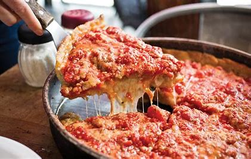
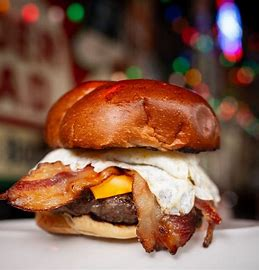
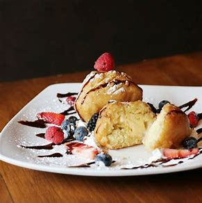

MUST TRY!!!




WELCOME!!!
Chicago Food Planet is an American chain of restaurants that enables
food lovers to come together and enjoy food. It provides online delivery
of food items, 24*7. At Chicago Food Planet, you will have some of the
city's best destination cafes, bistros, restaurants, fast food, and
others under one roof. Chicago Food Planet provides its customers a
heady combination of surreal surroundings in addition to tongue-tickling
food of different cuisines. Chicago Food Planet is not only the best
choice for traditional food at any hour of the day but also a good place
for children to have fun. We provide entertaining facilities, such as
puppet shows, for children.
OUR SERVICE
Chinese cuisine comprise cuisines originating from China. Because of the
Chinese diaspora and historical power of the country, Chinese cuisine
has influenced many other cuisines in Asia and beyond, with
modifications made to cater to local palates.
Indulge your taste buds with our diverse menu, crafted by our talented chefs who specialize in creating culinary masterpieces. From classic American favorites to international delicacies, we pride ourselves on using only the finest and freshest ingredients to deliver exceptional flavors to your plate.
Immerse yourself in the inviting ambiance of our beautifully designed restaurant, where modern elegance meets comfort. Whether you're seeking a romantic dinner for two, a gathering with friends and family, or a corporate event, our versatile spaces can accommodate your needs.
Our dedicated and knowledgeable staff is committed to providing exceptional service, ensuring that your dining experience exceeds your expectations. From the moment you step through our doors, we aim to create a memorable and personalized journey for each guest.